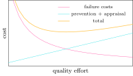

Definition
Diagnostic logic: is quality defined? measured? controlled? how are causes identified? → improvement (iterative). "Which hamburger has the best quality — McDonald's or a gourmet burger?" depends on the definition.
| Garvin (1984) | Quality is… |
|---|---|
| Product-based | a set of specific characteristics |
| Manufacturing-based | absence of defects (conformance) |
| Value-based | quality relative to cost/price |
| User-based | fitness for purpose |
| Transcendent | innate, intangible excellence |
| (+) Gap-based | expectations vs perceptions |
ANSI/ASQC: "the totality of features and characteristics of a product or service that bear on its ability to satisfy given needs".
Model
Dimensions
Performance (main features), aesthetics (look, feel, smell, taste), features (extras), conformance (to customer expectations/specs), reliability (consistency), durability (useful life), perceived quality (reputation), after-sales service (complaints, satisfaction). Tool: QFD.
ISO 9001
International standard for any organization; eight principles: customer focus, leadership, involvement of people, process approach, system approach to management, continual improvement, factual decision making, mutually beneficial supplier relations.
Gap view
Customer expectations vs perceived service: perceived quality is poor if expectations exceed perceptions, good if perceptions exceed expectations (Parasuraman, Zeithaml, Berry: SERVQUAL five gaps).
Measures and standards
Objective or subjective? absolute or relative? who judges — customers, staff, managers? Standards: historical, strategic (targets), external (competitors), absolute. Different standards give different messages: actual 83% is good vs last year's 60% and vs competitors' 75%, poor vs the 95% strategic goal and vs absolute 100%.
Costs of quality
| Category | Includes |
|---|---|
| Prevention | planning quality, design improvement, training, |
| process control | |
| Appraisal | sampling plans, inspection and test, audits, |
| customer surveys | |
| Internal failure | scrap, rework, lost time, troubleshooting |
| External failure | lost goodwill, returns, litigation, warranty, |
| excess service capacity |
Traditional view: prevention+appraisal costs rise with effort, failure costs fall → an optimum level of quality effort. Modern (TQM) view: prevention reduces failures more than it costs, so total cost keeps falling — aim at zero defects.
Worked example
Before: prevention 10, appraisal 30, internal failure 60, external 100 → 200. After training and poka-yoke: prevention 40, appraisal 20, internal 25, external 30 → 115. Spending 30 more on prevention saved 115.
Pitfall
Conformance is one of eight dimensions, not the whole of quality. Appraisal finds defects; only prevention avoids them.
Recall
List Garvin's five definitions and the gap view; eight dimensions; four cost categories; compare traditional and TQM cost curves.
Picture

Traditional model: total cost is minimal at an intermediate effort; TQM argues prevention shifts it towards zero defects.